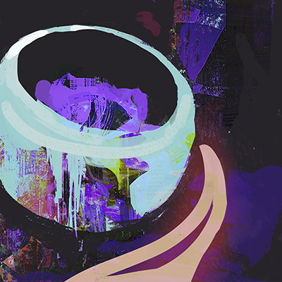

ХАРАКТЕРИСТИКИ
У персонажей игроков(ПИ) есть три характеристики. Каждая из них используется в различных ситуациях:
- СИЛА: Применяется для спасбросков, требующих физической силы, таких как поднятие тяжелых предметов, проверки на выносливость, стойкость против парализующих эффектов и т.д.
- ЛОВКОСТЬ: Используется для спасбросков, где нужна ловкость, скорость, рефлексы, уклонение, лазание, скрытность, баланс и т.д.
- ВОЛЯ: Требуется для спасбросков при допросе, убеждении, уверенности, запугивании, провокации,навигации в пространстве, обмане, проницательности, т.д.
Спасброски
- Спасбросок — это проверка, позволяющая избежать негативных последствий рискованных действий. Персонажи бросают d20 и сравнивают результат со значением соответствующей характеристики. Если результат меньше или равен характеристике — спасбросок успешен; в противном случае — нет. Результат «1» всегда означает успех, а «20» — неудачу.
- Если два оппонента пытаются превзойти друг друга, спасбросок делает тот, кто находится в менее выгодном положении.
- Если персонажи действуют совместно, спасбросок выполняет тот из них, кто больше рискует (обычно персонаж с меньшим значением характеристики).
- В бою с виртуальными противниками(МОБами) используются только спасброски на ЛОВКОСТЬ, чтобы уклонятся от некоторых особых атак
Лечение и восстановление
- Для восстановления потерянных ОЗ — отдохните несколько минут и выпейте кофе. Персонажа, получившего критический урон, можно стабилизировать с помощью бинтов.
- Потеря характеристики (см. Критический урон) обычно восстанавливается после недели отдыха под наблюдением врачей. Бесплатных медицинских услуг нет.
- МОБы не могут нанести вам физический урон, но снижают показатель Прочности оружия, который зависит от вашего виртуального оружия. Когда Прочность опускается до нуля, вы теряете весь неизрасходованный опыт, а также не можете использовать виртуальное оружие, пока не пройдет 160 минут игрового времени или вы не посетите гильдейского ремесленника.
- Также если запас Прочности полностью не исчерпался, он автоматически восстанавливается, если вы не находитесь в бою с МОБами.
Броня
- Прежде чем уменьшить количество ОЗ цели, из результата броска урона вычитается значение Брони цели. Аналогично и с Прочностью у вирт. оружия – вычитается значение вирт. Брони
- Различные элементы брони предоставляют бонус к защите (например, Броня +1) лишь пока экипированы. Некоторые из них также могут давать ситуативные преимущества
- Персонажи игроков и неигровые персонажи не могут иметь более 3 единиц брони. Однако у вирт. Брони нет таких ограничений по количеству.
СРАЖЕНИЕ
Раунды
- Раунд длится примерно десять секунд игрового времени, в течение которых стороны действуют по очереди. Каждый раунд начинается с действий персонажей игроков, затем ходят их противники. Результат действий каждой стороны наступает одновременно.
- В первом раунде боя ПИ должны пройти спасбросок ЛОВ, чтобы начать действовать. Особые обстоятельства, навыки, предметы могут отменить это требование. Персонажи, не прошедшие проверку, пропускают свой ход в этом раунде.
- Затем действуют противники, и первый раунд заканчивается. Далее цикл повторяется, пока бой не завершится победой одной из сторон или бегством.
Действия
В свой ход персонаж может переместиться на расстояние до 40 футов и совершить одно действие. Это может быть атака, повторное перемещение или другое разумное действие. Игрок должен описать действие персонажа перед броском костей. Если персонаж действует рискованно, Гейм-мастер может назначить прохождение спасброска всем затронутым участникам сцены. Виртуальные атаки, взаимодействие с интерфейсом и виртуальными объектами — требуют реальных движений и жестов и поэтому также считаются за действия.
Атаки и урон
- Все атаки попадают автоматически. Атакующий бросает кости урона своего оружия, вычитает значение брони цели, затем наносит оставшийся урон по ее ОЗ.
- Если несколько персонажей атакуют одного врага, то бросаются все кости урона и считается только наивысший бросок. Все действия должны быть согласованы до броска.
- Если атака снижает количество ОЗ Персонажа игрока ровно до 0, обратитесь к таблице Травм, чтобы определить уникальные последствия.
Модификаторы атак
- Если персонаж атакует из невыгодного положения (например, через укрытие или со связанными руками), атака будет Ослаблена, и атакующий нанесет 1к4 урона независимо от кости урона оружия. Безоружные атаки всегда наносят 1d4 урона. МОБам можно нанести урон лишь вирт. оружием.
- Если персонаж атакует из выгодного положения (например, по беспомощному врагу или через смелый маневр), атака будет Усилена, позволяя атакующему бросить 1d12 вместо обычного кости урона. К бою с МОБами это правило не относится.
- Атаки со свойством Взрыв воздействуют на все цели в указанной области. Это может быть взрыв гранаты, дыхание дракона или падение метеорита. Атакующий бросает кость атаки отдельно для каждого пораженного персонажа. Если из описания неясно, сколько целей поразит ваша атака, бросьте кость урона для определения их количества.
- При атаке двумя оружиями, все кости урона бросаются одновременно и выбирается наибольший результат. Обозначается такой тип атаки символом «+», например, d8+d8.
Критически урон
- Когда цель получает урон, опускающий ее ОЗ ниже нуля, избыток урона отнимается от значения СИЛ. Затем цель должна немедленно пройти спасбросок СИЛ, используя новое значение, чтобы избежать получения Критического урона. При успехе цель остается в бою и должна проходить спасброски при каждом получении урона.
- Получив критический урон, ПИ не может делать ничего, кроме как медленно ползти, цепляясь за жизнь. Если ему помогут — например, сделают перевязку — он стабилизируется. Если этого не произойдет - он умрет в течение часа.
- Персонажи Гейм-мастера не прошедшие проверку на критический урон — считаются мертвыми (по желанию ГМа). А Вирт противники умирают мгновенно когда их ОЗ опускается до нуля.
Потеря характеристик
- Если персонаж получает урон вне боя, его значение отнимается от характеристики, обычно СИЛ.
- Если СИЛ ПИ снижается до 0, он умирает. Снижение ЛОВ до 0 парализует персонажа, а ВОЛ — вводит в жуткую депрессию. При полной потере ЛОВ или ВОЛ, персонаж считается недееспособным, пока не восстановит здоровье длительным отдыхом или необычными средствами.
Бегство
- Чтобы сбежать из опасной ситуации, персонаж должен пройти спасбросок ЛОВ, а также иметь безопасное место, куда можно отступить.
Дальние атаки
- Атаки дальнобойного оружия могут поразить любого врага, если вы достаточно близко, чтобы попытаться разглядеть белки его глаз за mr-очками. Атаки по целям на большей дистанции Ослаблены.
- Боеприпасы можно не подсчитывать, если не указано иначе.
ИНВЕНТАРЬ
- Инвентарь персонажей состоит из 10 ячеек, но без использования сумки, рюкзака можно нести лишь четыре предмета.
- Каждый персонаж начинает игру с рюкзаком на шесть ячеек для предметов. Транспортные средства позволяют перевозить с собой гораздо больше предметов.
- Пространство инвентаря является абстрактным и зависит только от игровой ситуации и видения Гейм-мастера. Персонаж, заполнивший все 10 ячеек, считается перегруженным и его ОЗ снижается до 0. Вы не можете нагрузить персонажа больше, чем вмещает его инвентарь.
- Чтобы использовать свойства виртуальных предметов нужно экипировать их на себя - только один предмет каждого типа за исключением колец. Неэкипированное виртуальное снаряжение можно хранить в неограниченном количестве виртуальном инвентаре.
Ячейки инвентаря
- Большинство предметов занимают одну ячейку, если не указано иначе.
- Мелкие предметы и обычная экипированная одежда не занимают ячейки, а громоздкое - занимают сразу три.
- Оружие с меткой двуручное можно использовать только с помощью двух рук.
ОПЦИОНАЛЬНЫЕ ПРАВИЛА
Отряды
- Большие группы одинаковых противников, сражающихся вместе, можно рассматривать как один Отряд. При получении Критического урона — Отряд морально подавлен, а когда его Сила достигает 0 — уничтожен.
- Атаки одиночной цели против отряда Ослаблены, не считая урон от Взрыва. Атаки отряда по одиночной цели Усилены и имеют модификатор Взрыв.
Мораль
- Враги должны пройти спасбросок ВОЛ, чтобы не сбежать после первой потери в своих рядах, и снова — когда лишатся половины группы.
- Некоторые группы могут использовать значение ВОЛ своего лидера вместо собственного. Одиночные цели делают спасбросок, когда их ОЗ снижается до 0.
- Правило морали не влияет на Персонажей игроков.
Согильдийцы
- Игроки могут взять к себе в группу членов своей гильдии, что бы пополнить свою группу или создать рейд.
- В данный момент инструменты для их генерации не готовы. Но вы пока можете ориентироваться на правила оригинально Cairn по созданию Наемников.
Смерть персонажа
- Когда персонаж умирает, игроку нужно создать нового или взять под контроль члена гильдии. Он немедленно присоединяется к группе, чтобы уменьшить время простоя.
Пригласи друга
- Если вы переслали знакомому или выложили у себя в блоге/соц. сети ссылку на IsOnline, то вам дополнительно доступен виртуальный предмет в начале игры:
Наследное кольцо Ухукве

Вирт. Предмет: Кольцо
Стоимость: 8к+1 Вирт. Брони
Это изящное кольцо - подарок от администратора IsOnline всем, кто во время тестирования приглашал новых игроков
ТРАВМЫ
Если урон от атаки снижает ОЗ персонажа точно до 0, определите по таблице ниже полученную травму, опираясь на количество потерянных ОЗ. Например, если ОЗ персонажа уменьшились с 3 до 0, следует выбрать пункт #3 (Опрокидывание).
Таблица Травм
| ОЗ | ТРАВМА |
|---|---|
| 1. | Шрам: Бросьте 1d6. 1: Шея, 2: Рука, 3: Глаз, 4: Грудь, 5: Нога, 6: Ухо. Бросьте 1d6 еще раз. Если значение больше вашего максимального ОЗ, то запишите новый результат. |
| 2. | Ошеломление: Вы дезориентированы и потрясены. Опишите как вы пытаетесь прийти в себя. Бросьте 1d6. Если значение больше вашего максимального ОЗ, то запишите новый результат. |
| 3. | Опрокидывание: Вас отбросило, и вы упали лицом вниз, вам тяжело дышать. Вы будете истощены, пока не отдохнете несколько часов. Затем бросьте 1d6 и добавьте это значение к вашему максимальному ОЗ. |
| 4. | Перелом: Бросьте 1d6. 1-2: Нога, 3-4: Рука, 5: Ребро, 6: Череп. После заживления бросьте 2d6. Если сумма больше вашего максимального ОЗ, то запишите новый результат. |
| 5. | Болезнь: Вы заражены инфекцией, которая создает множество проблем и дискомфорта. После выздоровления, бросьте 2d6. Если сумма больше вашего максимального ОЗ, то запишите новый результат |
| 6. | Травма головы: Бросьте 1d6. 1-2: СИЛ, 3-4: ЛОВ, 5-6: ВОЛ. Бросьте 3d6. Если сумма больше вашего максимального значения, то запишите новый результат. |
| 7. | Разрыв сухожилий: Вы едва можете двигаться, пока не получите серьезную помощь и не отдохнете. После восстановления, бросьте 3d6. Если сумма больше вашей максимальной ЛОВ, то запишите новый результат. |
| 8. | Потеря слуха: Вы не можете слышать, пока не отыщите опытного врача. Не смотря на это, сделайте спасбросок ВОЛ. При успехе - увеличьте максимальное значение ВОЛ на 1d4. |
| 9. | Изменение психики: Некогда скрытая часть вашей личности вырывается на волю. Бросьте 3d6. Если сумма больше вашего максимального значения ВОЛ, то запишите новый результат. |
| 10. | Разрыв: Конечность оторвана, искалечена или стала бесполезной. Смотритель подскажет, какая именно. Сделайте спасбросок ВОЛ. При успехе - увеличьте максимальное значение ВОЛ на 1d6. |
| 11. | Смертельная рана: Вы лишены сил и выведены из строя. Вы умрете через час, если вас не спасут. После восстановления, бросьте 2d6. Запишите результат как ваше новое значение ОЗ. |
| 12. | Обречен: Смерть была рядом, но вам удалось избежать встречи с ней. Провалив следующий спасбросок против Критического урона, вы погибните в мучениях. При успехе, бросьте 3d6. Если сумма больше вашего максимального ОЗ, то запишите новый результат |
МАРКЕТПЛЕЙС
- Примитивное оружие (1к): d6 урона, громоздкое. лопата, табурет и т. д.
- Нож (2к): d8 урона
- Металлическая дубинка/арматура (2к): d6 урона
- Электрошокер(5к): парализует цель на 3 раунда
- Перцовый баллончик(2к): противник пропускает 1 раунд и получает ослабленность на 30мин игрового времени
- Дымовая шашка(5к): пока горит, заполняет комнату дымом. Атаки в дыму получают *ослабленность
- Светошумовая граната (7к): ослепляет на 2 раунда всех, кто провалил спасбросок ЛОВ
Огнестрельное оружие в вашем городе запрещено и его будет сложно достать
- Пистолет (100к): d10 урона.
- Винтовка (200к): d12 урона, громоздкое, двуручное
- Рюкзак(4к): +6 ячеек инвентаря
- Мотоциклетный шлем(5к): броня +1, ловкость -2
- Наголенники и налокотники(4к): броня +1
- Бронежилет(40к): броня +2 -2 ЛОВ
- Бронежилет модели “Mythril”(100к): броня +3
- Простые инструменты(2к): ломик, саперная лопата, складная лестница
- Аккумуляторная болгарка по металлу (15к): громоздкое, двуручное
- Болторез большой(4к): громоздкое, двуручное
- Легковой автомобиль(400к): +6 ячеек инвентаря для размещения
- предметов
- Фургон(600к): +15 ячеек инвентаря для размещения предметов
- Аренда жилья (за неделю): 7к за обычное жилье, 3,5к за самую ужасную комнатку
- Еда и питьё на день (0.5к)
- Проезд на общественном транспорте (0.2к)
- Проезд на такси (1к)